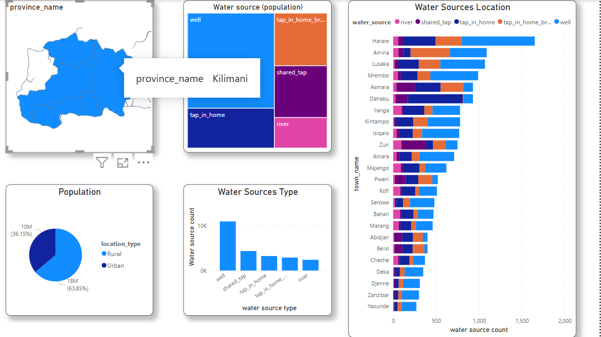
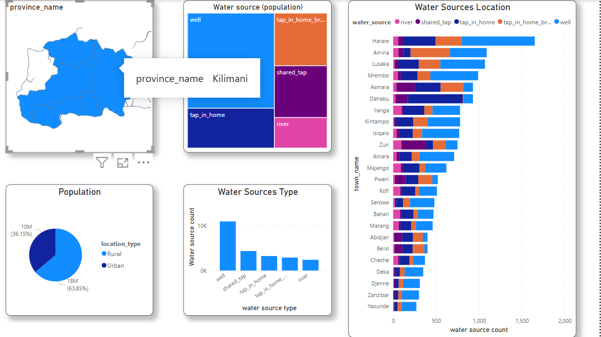

Water Quality and Infrastructure Analysis
This Power BI dashboard visualises the currents of change in Maji Ndogo. It explores gender composition of queues at shared water taps, considers new crime related data, reports insights to decision makers, and tracks the progress of various water-related projects.
 
